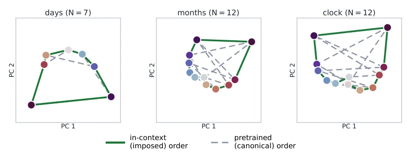
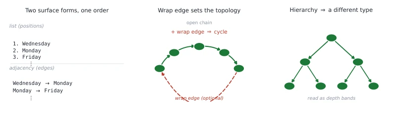
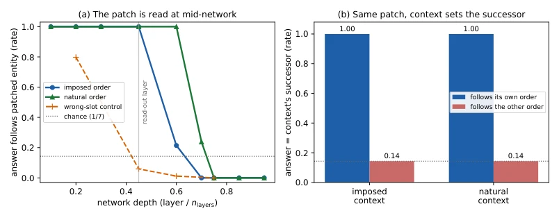
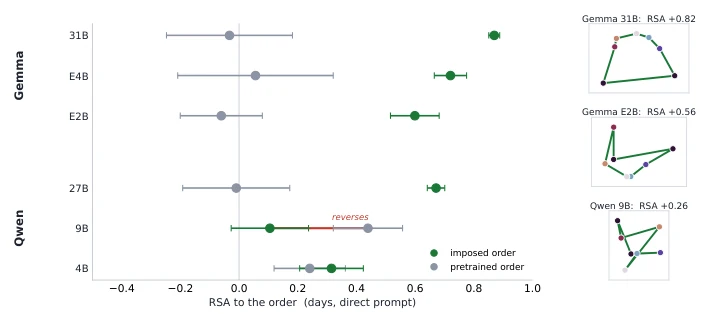
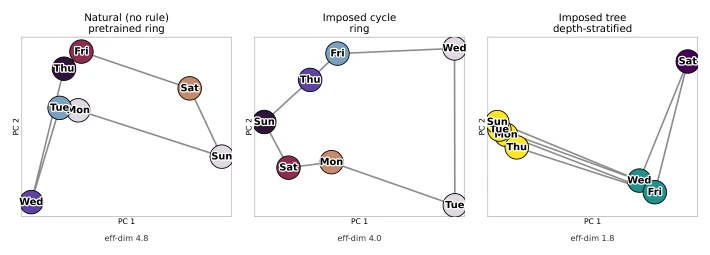
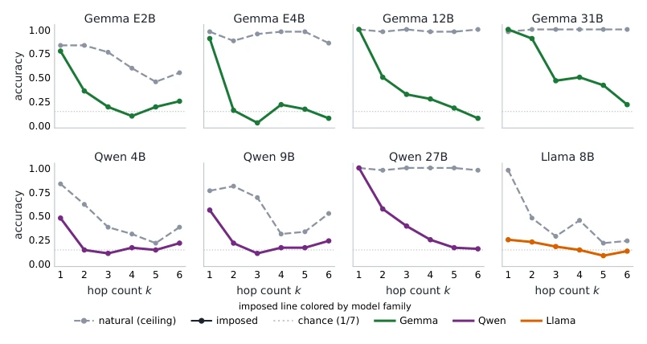
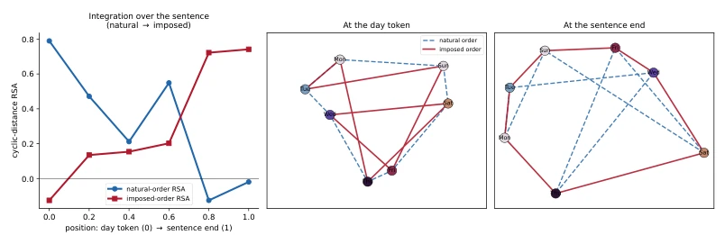
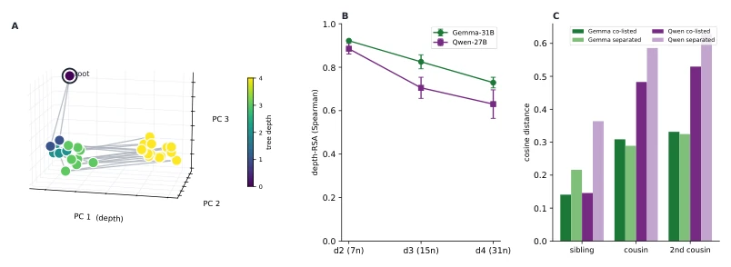
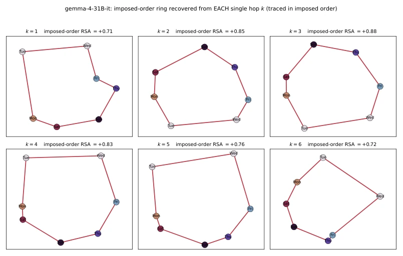
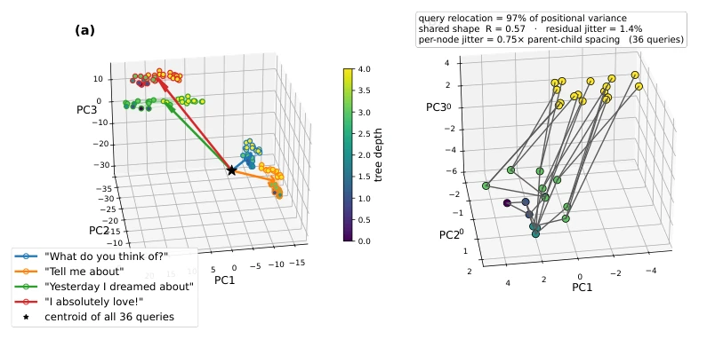

This paper is virtually delivering a stinging slap to 'world model' dogmatism. The authors use RSA and activation patching to demonstrate that the geometric structure in LLMs is not a fixed map carved into weights, but scaffolding erected on the fly according to context. The most striking aspect is that they can forcefully change 'week' from a circle to a tree, and make the model comply obediently, even constructing topology for meaningless tokens. However, the direct contribution of this research to embodied AI is somewhat ambiguous—after all, robots do not need to redefine days of the week, but this is indeed incisive for understanding LLM reasoning mechanisms. As for limitations, they mainly rely on large models, small models perform poorly, and only text concepts were tested, without seeing multimodal or actions, feeling like conducting 'geometric renovation' in a pure text world, far from true embodied implementation. But as basic model interpretability research, it indeed tears open a corner of the black box, reminding us not to treat pre-training priors as absolute truth.
研究动机Motivation
现有研究普遍认为 LLM 存储了固定的“世界模型”，概念几何结构（如星期在圆环上）是预训练权重里的固定事实 (Gurnee & Tegmark, 2023; Engels et al., 2024)。Park et al. (2025) 虽然尝试用上下文重塑几何，但发现强先验难以被覆盖，认为模型倾向于检索而非计算。本文动机在于打破这种“检索式”假设，探究概念关系是内在属性还是按需组装。核心争议在于：当上下文指令与预训练先验冲突时，模型究竟听谁的？如果模型只是检索固定结构，它无法改变拓扑类型（如从环变树）；如果它是按需构建，上下文就是主宰。这直接关系到我们如何理解 LLM 的推理机制——是查表还是计算？对于具身智能而言，若世界模型是动态构建的，则机器人对环境的理解可能比预想的更具可塑性，而非依赖死板的预训练知识。
Existing research generally posits that LLMs store fixed 'world models', where concept geometric structures (such as weeks on a ring) are fixed facts within pre-training weights (Gurnee & Tegmark, 2023; Engels et al., 2024). Although Park et al. (2025) attempted to reshape geometry with context, they found strong priors difficult to override, believing models tend to retrieve rather than compute. The motivation of this paper lies in breaking this 'retrieval' assumption, to explore whether concept relations are intrinsic attributes or assembled on demand. The core controversy lies in: when context instructions conflict with pre-training priors, whose voice does the model heed? If the model merely retrieves a fixed structure, it cannot alter the topology type (e.g., from ring to tree); if it is on-demand construction, context is the master. This directly relates to how we understand the LLM reasoning mechanism—is it lookup table or computation? For embodied AI, if the world model is dynamically constructed, then a robot's understanding of the environment may be more plastic than anticipated, rather than relying on rigid pre-trained knowledge.

Figure 1: Entity centroids for three cyclic concepts under a conflicting in-context order (Gemma- 31B; 2D PCA of the last-token pre-generation state; one representative scramble, colored by im- posed position). Each path is traced in the pretrained order (dashed) and the imposed order (solid). Imposed vs. pretrained RSA (full space, mean over 10 scrambles): days +0.87/−0.03, months +0.81/+0.05, clock hours +0.82/−0.05.
方法Method
整体流程分为表征探测与因果验证两步。首先，通过 RSA 探测几何结构：在残差流最后一层提取实体质心，计算表示相似性矩阵 (RDM)，与理论模板（如环状距离）做 Spearman 相关。关键创新在于“冲突设定”，强制定义与常识相反的顺序（如周三在周一前），并测试任意无意义 token 能否构建结构。此外，通过多尺度模型（Gemma, Qwen 系列）测试规模效应。其次，使用 Activation Patching 验证因果性：在中间层将实体 A 的激活替换为实体 B，观察模型是否输出 B 的“后继者”。若输出随上下文规则变化（如规则下输出 B 的后继，自然语境下输出 B 的预训练后继），则证明几何是计算而非查表。通过 mean-centering 去除各向异性，确保几何信号不被噪声掩盖，并区分直接回答、脚本推理和自由生成三种模式，确保几何在生成前已整合。
The overall process is divided into two steps: representation probing and causal verification. First, RSA is used to probe the geometric structure: extract entity centroids from the last layer of the residual stream, calculate the representational similarity matrix (RDM), and perform Spearman correlation with theoretical templates (e.g., ring distances). The key innovation lies in the 'conflict setting', forcing definition of an order opposite to common sense (e.g., Wednesday before Monday), and testing if any meaningless token can build the structure. Additionally, test the scale effect using multi-scale models (Gemma, Qwen series). Second, Activation Patching is used to verify causality: in intermediate layers, replace the activation of entity A with that of entity B, and observe whether the model outputs B's 'successor'. If the output changes with context rules (e.g., outputs B's successor under rules, outputs B's pre-training successor under natural context), it proves geometry is computation rather than lookup. Through mean-centering to remove anisotropy, ensure the geometry signal is not masked by noise, and distinguish three modes: direct answer, script reasoning, and free generation, ensuring geometry is integrated before generation.

Figure 2: What a specification is. The same order stated as a numbered list or as adjacency edges (left); adding a wrap edge closes the chain into a cycle (middle; the open, no-wrap case is a weaker baseline); a declarative hierarchy is a different structure type, read as depth layers (right).

Figure 7: The context-set map is causally used (Gemma-31B, days; entity-substitution patch hEorig ←hEpatch, 42 ordered pairs × 2 scrambles). (a) Across depth, the patched answer follows the donor entity’s successor when the overwrite is applied at mid-network, under both the imposed and the natural order; the wrong-slot control (writing the entity vector at a non-entity slot) leaks only at the earliest layers and then falls to chance, locating the effect at the entity. (b) At the read- out layer the same patch follows whichever successor the context specifies—imposed-order under the imposed context, pretrained-order under the natural context—and the other order only at chance (1/N ≈0.14): a double dissociation. The answer is computed from the (patched) representation through the context-bu
Experiments cover three families: Gemma, Qwen, and Llama, totaling 8 models. Concepts include weeks, months, clocks, and arbitrary meaningless words. The main metrics are RSA scores and causal patch success rates. Results show that under the conflict setting, the geometric structure of large models (Gemma-31B, Qwen-27B) fully obeys the context, RSA near 0.9, while pre-training priors are suppressed to near zero. Topology types can be changed by instruction (ring to tree), and this acts on any token. In causal verification, large models, after entity activation replacement in intermediate layers, can correctly output successors based on context rules, presenting 'double dissociation'. Small models (e.g., Qwen-9B) can form rough structures but cannot cleanly follow rules, proving 'clean usage' is a scale-gated ability. Behavior tests show that large models can follow new rules in a single step, while small models degrade, indicating the mechanism exists but the ability is not yet mature.

Figure 3: Imposed-order RSA (green) vs. residual natural-order RSA (gray) per model in the same probed state (left; days, direct prompt, per-scramble 95% CIs), and imposed-order geometry for three models (right; annotated RSA). Per-model values in Appendix G.

Figure 6: Seven weekdays under three specifications (Gemma-31B; per-condition 2D PCA, one scramble; effective dimension = participation ratio, mean±std over 10 scrambles): un-imposed (day-token readout), an imposed cycle (≈4-D), and an imposed tree (≈1.8-D). Cross-family values and the line case in Appendix K.

Figure 10: Accuracy by hop count k=1–6 per model in the direct (no-reasoning) regime (days, list, bare ≤3-token answers, two scrambles): natural order (dashed, per-k ceiling) vs. imposed order (solid), with the 1/7 chance line. One-shot accuracy degrades with k even for the capable models; the reasoning regimes recover ceiling (Figure 11).
其他图片Other Figures

Figure 4: Imposed- and natural-order RSA by readout position (left; day token = 0 to sentence end = 1, Gemma-31B), and the entity centroids at each position traced in both orders (middle, right; natural dashed, imposed solid).

Figure 5: Imposed depth-4 tree on arbitrary tokens under neutral queries (Gemma/Qwen). (A) Entity-centroid PCA (color = depth; parent/child edges; depth-RSA +0.73). (B) Depth-RSA as the tree grows, +0.92/ + 0.89 (depth-2) to +0.73/ + 0.63 (depth-4; per-scramble 95% CIs). (C) Among same-depth leaves, cosine distance vs. common-ancestor distance; co-occurrence control depth-RSA 0.83 →0.82 (Gemma), 0.71 →0.72 (Qwen).

Figure 9: Imposed ring recovered from each hop value k separately (Gemma-31B; centroids from one k at a time, traced in the imposed order; imposed-order RSA +0.71 to +0.88 across k).

Figure 12: Imposed depth-4 tree across 36 query types (Gemma-31B). (a) Four query types place the tree at different locations (arrows = query vectors from the 36-query centroid; color = depth). (b) The per-node centroids, recentered to a common origin (ρ = 0.70 to the consensus; per-node jitter 0.75× parent–child spacing); the query accounts for 97% of positional variance.